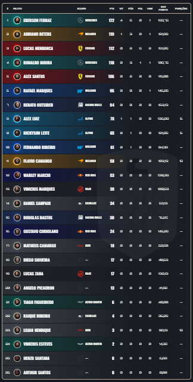

Em andamento
StopAndGo Start 1
Primeiro campeonato de F1 registrado pela 1-MEL. A temporada ainda esta rolando e a tabela abaixo guarda a classificacao atual.

F1 / Campeonatos
Historico dos campeonatos de F1 que a 1-MEL correu, com registros das tabelas e divisoes.
Voltar para F1Historico
Primeiro campeonato de F1 registrado pela 1-MEL. A temporada ainda esta rolando e a tabela abaixo guarda a classificacao atual.
